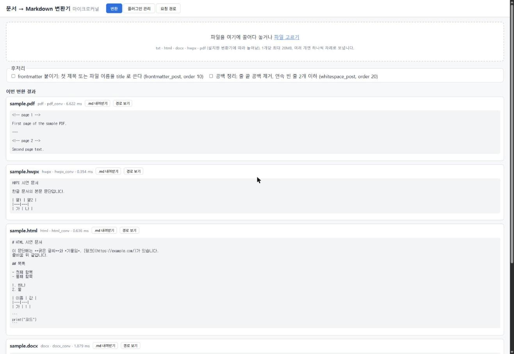
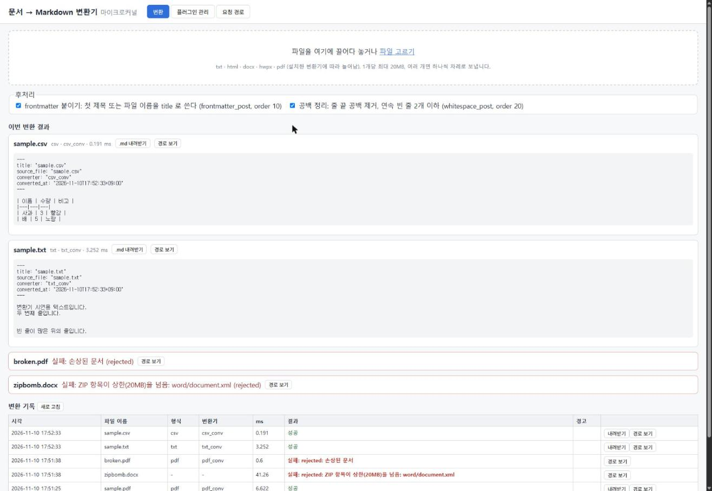
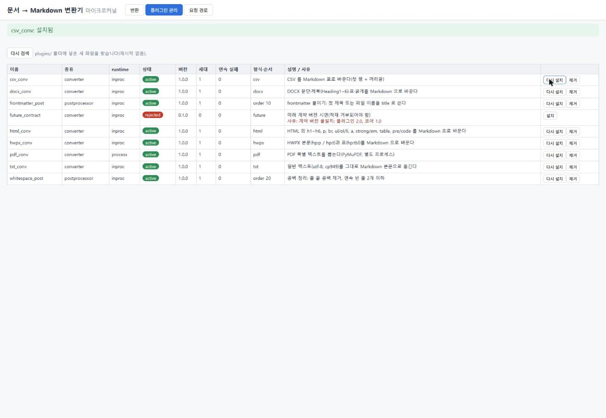
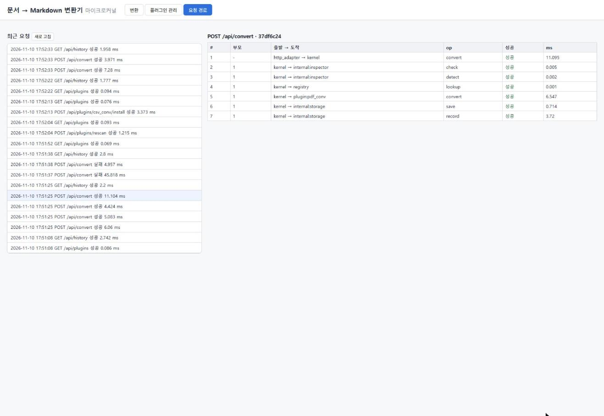

과제3 · 마이크로커널 아키텍처 스타일을 적용한 시스템 구현
문서 → Markdown 변환기 (Python 3.14 표준 라이브러리, 브라우저 화면)
요약
- 무엇: 문서 파일(txt·html·docx·hwpx·pdf)을 브라우저에 올리면 Markdown 으로 바꿔 주는 도구입니다. 형식마다 변환기가 플러그인이고, 실행 중에 설치·제거합니다.
- 구조: 코어(
kernel/)는 변환 절차의 순서와 장애 격리만 맡습니다. 형식 판별·저장은 내부 서버, 변환·후처리는 외부 서버(플러그인)입니다. 모든 인터랙션은 코어를 거칩니다. - 인터랙션: 플러그인은
handle(op, payload, ctx)하나만 구현합니다. 같은 계약을 프로세스 안 호출과 별도 프로세스(JSON 한 줄) 두 방식으로 연결합니다. - 품질: 장애 격리(예외 3회 → 자동 비활성화), 별도 프로세스 시간 제한, 정적 의존 검사, 압축 폭탄·악성 XML 방어, 호출 비용 측정을 다뤘습니다.
- 검증: 시험 56건 중 55건 통과(1건은 환경 때문에 건너뜀), 브라우저에서 시연 절차 7단계 직접 조작, 깨뜨린 입력으로 55항목 확인, 다른 계열 모델(Codex)의 지시서·구현 교차 검토를 거쳤습니다.
1. 진행 과정
1.1 과제2에서 부족했던 점과 과제3에서 바꾼 것
과제3을 시작하기 전에 과제2를 돌아보고 바꿀 점을 정했습니다.
| # | 과제2에서 부족했던 점 | 그 결과 | 과제3에서 바꾼 것 |
|---|---|---|---|
| 1 | 내 지시가 짧고 열려 있었다. 완료 기준이 "시험 통과"뿐이었다 | 사용자가 직접 조작할 화면이 없었다 | 완료 기준에 사용자 조작 요건 6개를 넣었다: 브라우저에서 직접 사용, 실행 중 플러그인 설치·제거, 새 플러그인 파일 추가, 재시작 뒤 데이터 보존, 장애 중 계속 동작, 요청 경로 보기 |
| 2 | 메인 에이전트가 구체화한 구현 지시서를 내가 검토하지 않았다 | 지시서의 "파일 하나" 조건 때문에 구조가 한 파일에 몰렸다 | 지시서를 넘기기 전에 내가 읽고 승인한다. 다른 계열 모델(Codex)에게 교차 검토를 받는다. 폴더 구성을 지시서에 정한다 |
| 3 | 품질 속성 문제를 다루지 않았다 | 짧은 주기 폴링, 재시작하면 데이터 소실, 장애 복구 없음 | sqlite 로 보존한다. 플러그인 장애 격리와 별도 프로세스 시간 제한을 둔다. 호출 비용을 측정한다 |
| 4 | 요청이 어떤 경로로 처리되는지 내가 설명하지 못했다 | 결과물을 내가 이해했다고 말하기 어려웠다 | 요청마다 지나간 경로를 기록해 화면에 보인다. 대표 요청의 파일·함수 순서를 보고서에 적는다(4.4) |
| 5 | 보고서가 길었다 | 핵심이 묻혔다 | 결론과 근거를 먼저 쓰고 짧게 쓴다 |
1.2 진행 순서
제가 Claude Code(메인 에이전트, Claude Opus 5.5)에 한 지시는 13개입니다. 전문과 지시별 결과는 부록 A 에 있습니다.
- 주제 정하기: 경매(A)와 문서 → Markdown 변환기(B) 두 후보를 함께 만들고 나중에 하나를 고르기로 했습니다.
- 구현 지시서 작성: 메인 에이전트가 공통 지시서와 후보별 지시서를 썼고, 제가 읽고 승인했습니다. 구성요소 배치, 커넥터, 제약과 강제 방법, 폴더 구성, 품질 문제, 검증 기준을 지시서에 직접 정했습니다.
- 지시서 교차 검토: 다른 계열 모델(OpenAI Codex, GPT-6.1 Sol, reasoning xhigh, 읽기 전용)이 지시서를 읽고 결함을 지적했습니다. 지적마다 메인 에이전트가 원문과 대조해 지시서를 고치고 다시 검토받았습니다(1.3).
- 구현: 서브에이전트(Claude Opus 5.5, effort medium)가 후보마다 하나씩, 각자 자기 폴더에서 만들었습니다.
- 검수: 메인 에이전트가 시험을 다시 돌리고 브라우저에서 조작했습니다. Codex 가 구현을 교차 검토했습니다(후보 B HOLD 9).
- 지시서 재검토와 수정: 구현 검토의 지적 가운데 지시서가 모호해서 생긴 것을 규칙으로 옮겼습니다. 다시 지시서 교차 검토를 새 지적이 0 이 될 때까지 반복한 뒤 구현을 고쳤습니다.
- 재검수: 메인 에이전트가 시험을 다시 돌리고, 직접 만든 깨진 입력으로 동작을 확인하고, 브라우저 시연 절차를 따라갔습니다. 구현 2차 교차 검토는 Codex 사용 한도가 바닥나 코드를 쓰지 않은 Claude Sonnet 서브에이전트가 맡았습니다. 여기서 나온 HOLD 3건을 고치고 같은 확인을 다시 했습니다(6장).
1.3 지시서 교차 검토의 수렴
"새 HOLD" 는 고치지 않으면 지시서대로 만든 구현이 깨지거나 해석이 갈리는 지적입니다. 회차마다 줄었고 13차에서 0 이 됐습니다.
| 회차 | 대상 | 새 HOLD | 주된 지적 |
|---|---|---|---|
| 1차 | 지시서 초판 | 17 | 계약·생명주기·시험 기준 전반 |
| 2차 | 2판 | 3 | 앞 지적의 남은 경로 |
| 3~6차 | 3~6판 | 0~1 | 시험 동기화(멈춘 자식, fixture 입력) |
| 7차 | 단순화한 9판 | 2 | 단순화 때 지운 압축 방식 검사가 실제로 필요했음 |
| 구현 → 구현 교차 검토(후보 B HOLD 9) → 지시서가 모호해서 생긴 지적을 규칙으로 옮김 | |||
| 8차 | 공통 10판 | 6 | 종료와 설치의 순서, 저장 실패 정리, 시험의 시간 의존 |
| 9차 | 11판 | 4 | 종료 표시와 장애 집계의 잠금, 자식 프로세스가 죽었을 때 대기 깨우기 |
| 10차 | 12판 | 3 | 바이트 전송 표시와 일반 값의 충돌, CSV 파싱 오류 |
| 11차 | 13판 | 2 | JSON 직렬화가 출력 위반을 지움, 큰 정수 |
| 12차 | 14판 | 1 | 후처리 때문에 결과가 상한을 넘을 때 |
| 13차 | 공통 15판·B 9판 | 0 | — |
8차 뒤의 지적은 대부분 "프로세스 안"과 "별도 프로세스" 두 커넥터가 같은 입력에 다르게 행동하는 경계에서 나왔습니다. 마이크로커널에서 코어와 서버 사이의 커넥터가 바뀌어도 계약은 같아야 한다는 점을 이 과정에서 구체적으로 알게 됐습니다.
1.4 두 후보의 비교와 선택
| 항목 | A 온라인 경매 | B 문서 → Markdown 변환기 |
|---|---|---|
| 플러그인이 맡는 일 | 경매 방식(규칙), 알림 | 형식별 변환기, 후처리기 |
| 확장이 자연스러운가 | 경매 방식은 몇 가지로 끝납니다. 새 방식을 계속 더할 동기가 약합니다 | 새 형식이 계속 생깁니다. 형식마다 필요한 라이브러리가 달라서 별도 프로세스 커넥터를 쓸 이유가 실제로 있습니다(pdf) |
| 혼자 써 볼 수 있는가 | 여러 사용자가 있어야 의미가 있습니다(브라우저 탭 여러 개로 흉내 냄) | 파일을 넣으면 바로 결과를 받습니다 |
| 동시성 위험 | 실시간 입찰·마감·화면 갱신(SSE) 때문에 겹치는 지점이 많습니다. 구현 검토 HOLD 10건 중 7건이 동시 실행·정리 문제였습니다 | 변환 요청끼리는 서로 독립입니다. 겹침은 설치·제거·종료 같은 생명주기에 모입니다 |
| 검증 상태 | 공통 9판 기준 구현, 시험 48건 통과, 구현 검토 HOLD 10건은 고치지 않음 | 공통 15판·B 9판 기준으로 고침, 시험 55건 통과(1건 건너뜀), 깨진 입력 55항목 확인, 구현 재검토 2회 |
B 를 냅니다. 마이크로커널의 "플러그인을 실행 중에 더한다"가 B 에서 더 자연스럽게 드러나고, 두 커넥터를 모두 쓸 이유가 있으며, 마감까지 검증을 끝낸 후보가 B 입니다. A 는 비교용으로 저장소에 함께 둡니다.
2. 시스템 — 사용자가 하는 일
- 파일을 화면에 끌어다 놓거나 고릅니다(1개당 최대 20MB). 변환된 Markdown 을 미리 보고
.md로 내려받습니다. - 후처리(frontmatter 붙이기, 공백 정리)를 체크박스로 켜고 끕니다.
- 변환 기록(파일 이름, 판별 형식, 쓴 변환기, 소요 ms, 실패 사유, 경고)을 봅니다.
- 플러그인 관리 화면에서 설치·제거·다시 켜기를 하고, 상태(
active·disabled·rejected)와 사유를 봅니다. - 요청 경로 화면에서 요청 한 건이 지나간 구성요소를 순서대로 봅니다.



future_contract 는 rejected 와 사유가 보이고, 실패 파일을 넣은 뒤에도 docx·pdf 변환기의 연속 실패 수는 0 입니다.3. 구조 — 코어·내부 서버·외부 서버의 배치
plugin_host.py 는 kernel/ 에 있지만 자식 프로세스 안에서 돕니다.| 구성요소 | 배치한 기능 | 배치 이유 |
|---|---|---|
코어 kernel/ | 변환 절차의 순서(받기 → 안전 검사 → 형식 판별 → 변환기 선택 → 변환 → 후처리 → 저장 → 응답), 확장점 2개(converter·postprocessor), 입출력 계약 검사, 장애 격리, 추적, 플러그인 생명주기 | 어떤 형식이 오더라도 바뀌지 않는 최소한의 절차만 둡니다. 형식별 지식은 코어에 없습니다 |
내부 서버 internal/ | 형식 판별과 ZIP 안전 열기(inspector), 파일·기록 저장(storage) | 기본 동작에 늘 필요하고 사용자가 바꿀 일이 없습니다. 클라이언트에 보이지 않고 항상 적재됩니다 |
외부 서버 plugins/ | 형식별 변환기 5개, 후처리기 2개. 파일 1개 = 플러그인 1개 | 형식이 늘거나 바뀌는 곳입니다. 실행 중에 설치·제거합니다. PDF 는 외부 패키지(PyMuPDF)가 필요해 별도 프로세스로 둡니다 |
어댑터 adapters/ | HTTP ↔ 코어 계약(클라이언트 쪽), 별도 프로세스 ↔ 코어 계약(서버 쪽) | 코어는 HTTP 도, 프로세스 통신도 모릅니다. kernel/ 은 adapters/ 를 import 하지 않습니다 |
4. 코어와 서버의 인터랙션
4.1 계약
- 플러그인 파일은 최상위에
MANIFEST = {...}(리터럴 dict)와class Plugin(contract.Plugin)을 둡니다. 코어는 MANIFEST 를ast.literal_eval로 읽어 모듈을 실행하기 전에 이름·확장점·실행 방식·계약 버전을 압니다. - 플러그인은
handle(op, payload, ctx) -> dict하나만 구현합니다. 변환기 입력은 파일 이름·형식·바이트·ZIP 항목, 출력은{"markdown", "meta"}입니다. 코어가 입력과 출력을 계약대로인지 검사합니다. - 플러그인이 코어 밖에 닿는 길은
ctx하나입니다. B 의ctx허용 목록은ctx.log→storage.log하나뿐입니다. - 계약 버전이 다르면(
contract: "2.0") 적재하지 않고rejected로 사유를 보입니다.
4.2 두 가지 커넥터
| 프로세스 안 (inproc) | 별도 프로세스 (process) | |
|---|---|---|
| 쓰는 곳 | txt·html·docx·hwpx 변환기, 후처리기 | pdf 변환기(PyMuPDF) |
| 방식 | 코어가 인스턴스의 handle 을 직접 부름 | 어댑터가 자식 프로세스(plugin_host)와 UTF-8 JSON 한 줄씩 주고받음. 바이트는 {"$b64": ...} 로 바꿈 |
| 장점 | 빠름 | 시간 제한으로 끊을 수 있음, 외부 패키지를 격리함 |
| 한계 | 무한 루프·메모리 고갈을 막지 못함 | 호출마다 직렬화·통신 비용 |
두 커넥터는 코어 쪽에서 같은 계약으로 보입니다. 같은 출력은 어느 커넥터로 와도 같은 값으로 코어에 닿아야 합니다. 그래서 값의 종류(dict·list·str·64비트 int·유한 float·bool·None·bytes)를 정하고, 자식 쪽에서도 직렬화 전에 같은 검사 함수로 봅니다(1.3 의 10~11차).
4.3 "항상 코어를 통한다"를 강제하는 방법
| 제약 | 강제 장치 | 시점 |
|---|---|---|
| 플러그인끼리 직접 호출 금지, 내부 서버 직접 접근 금지 | 정적 의존 검사(kernel/constraints.py): ast 로 import 를 허용 목록 방식으로 검사합니다. 다른 플러그인·internal·상대 import, importlib·__import__, sqlite3·os import, open 사용은 위반입니다 | 적재 전(모듈 실행 전), tools/check_constraints.py, 시험 |
| 플러그인이 코어 밖에 닿는 창구 | ctx 허용 목록 | 실행 중 |
| 코어가 어댑터에 기대지 않음 | kernel/ 의 adapters import 를 검사합니다. 별도 프로세스 어댑터는 app.py 가 만드는 함수를 넘겨받아 씁니다 | 시험 |
이 장치는 구조 제약을 지키게 하는 장치이고 보안 샌드박스는 아닙니다. 플러그인 작성자는 신뢰하는 로컬 개발자로 봅니다.
4.4 대표 요청의 호출 경로
pdf 파일 하나를 변환하는 요청입니다. pdf 변환기는 별도 프로세스에서 돕니다. 요청 경로 화면(/api/trace/{id})에 같은 순서가 나옵니다(그림 5).
| # | 파일 : 함수 | 하는 일 |
|---|---|---|
| 1 | adapters/http_adapter.py : Handler.do_POST → _traced | 출처·크기를 확인하고 trace 를 열어 코어에 넘김 |
| 2 | kernel/flow.py : convert | 변환 절차의 순서를 정함(코어) |
| 3 | kernel/kernel.py : call_internal → internal/inspector.py : Inspector.check | ZIP 안전 열기, XML 검사 |
| 4 | 같은 경로 → Inspector.detect | 설치된 변환기의 확장자·내용 규칙으로 형식 판별 |
| 5 | kernel/kernel.py : select_converter | 그 형식을 맡는 active 변환기 하나를 고름 |
| 6 | kernel/kernel.py : call | 레지스트리에서 상태 확인·참조 확보, 입력 계약 검사 |
| 7 | adapters/process_adapter.py : ProcessAdapter.handle → 자식 kernel/plugin_host.py : main → plugins/pdf_conv.py : Plugin.handle | JSON 한 줄로 요청을 보내고 응답을 기다림(시간 제한 15초) |
| 8 | kernel/kernel.py : call → _finish | 출력 계약·값 검사, 성공·장애 집계 |
| 9 | kernel/flow.py : _save → internal/storage.py : Storage.save, Storage.record | 원본·결과 파일 저장, 변환 기록 |

kernel 에서 나갑니다. 플러그인끼리, 또는 플러그인과 저장소가 직접 만나는 hop 은 없습니다.5. 품질 문제와 해결
| 품질 속성 | 문제 | 해결 | 확인 |
|---|---|---|---|
| 가용성(장애 격리) | 플러그인 하나의 예외·멈춤이 전체를 멈춤 | 예외는 코어가 잡아 그 요청만 실패로 돌립니다. 같은 플러그인의 장애가 3회면 disabled, 다시 켜면 active. 입력 문제(Rejected)는 장애로 세지 않습니다 | E3: Rejected 10회 → 계속 active, 예외 3회 → disabled |
| 가용성(멈춤) | 별도 프로세스 플러그인이 응답하지 않음 | MANIFEST timeout_sec 를 넘기면 자식을 끊고 다음 호출 때 새로 띄웁니다 | E3: 시간 제한 3초 fixture 가 6초 안에 fault, 다음 호출은 새 자식으로 성공 |
| 성능 | 코어를 거치는 비용, 별도 프로세스는 더 큼 | 같은 플러그인을 두 방식으로 크기별 200회 호출해 비교했습니다. 별도 프로세스는 외부 패키지가 필요하거나 멈출 수 있는 변환기(pdf)에만 씁니다 | tools/bench.py: 1MB 평균 inproc 0.0003ms, process 9.9ms. 자식 기동 45ms |
| 변경 용이성 | 계약이 바뀌면 옛 플러그인이 깨짐 | 적재 때 계약 버전을 검사해 거부하고 사유를 보입니다 | E4 |
| 제약 준수 | 플러그인이 다른 플러그인·저장소에 직접 닿음 | 정적 의존 검사(4.3) | E5 |
| 보안(입력) | 압축 폭탄, 악성 XML(DOCTYPE), 경로 조작 파일 이름 | ZIP 은 stored·deflate 만, 항목 수·실제로 읽은 바이트 상한. DOCTYPE 거부. 저장 이름은 서버가 만든 ID | B 추가 시험 8건(ZIP 공격, 필요한 항목이 없는 ZIP, XML 인코딩, 깊은 중첩, 긴 섹션 번호, 깨진 HTML, 길이·크기 상한, 경로 이름), 깨진 입력 확인 55항목 |
| 동시성 | 설치·제거·종료가 진행 중 호출과 겹침 | 생명주기 잠금으로 설치·제거·다시 검색·종료를 한 줄로 세웁니다. 진행 중 호출(inflight)이 남은 플러그인을 제거하면 새 요청은 거부하고 남은 호출은 끝까지 마치게 둡니다. 그동안 같은 이름의 설치는 409 로 거부해 옛 호출이 새 인스턴스에 섞이지 않게 합니다 | E2·E3·E8 |
| 한계(해결 안 함) | 코어는 단일 실패 지점이고 따로 늘릴 수 없음. 프로세스 안 플러그인의 무한 루프는 못 막음 | README 의 한계에 적었습니다 | — |
6. 검증
6.1 자동 시험
python -m unittest discover -s tests: 56건 중 55건 통과, 1건 건너뜀(PyMuPDF 가 없는 환경용 시험. 같은 기동 실패 경로는 다른 fixture 로 확인). 시험은 임시 폴더에서 돌고, 끝난 뒤 plugins/·data/ 는 그대로입니다. 정적 검사 tools/check_constraints.py: 실제 플러그인 8개 위반 0건, 위반 예제 12개에서 14건을 잡음.
| 기준 | 판정 문장(요약) | 시험 |
|---|---|---|
| E1 확장 | 새 플러그인 파일 → 재시작 없이 다시 검색·설치 → 새 형식 동작 | 1 |
| E2 제거 | 제거 → 그 기능만 오류. 진행 중 호출 중 제거 → 설치 409, 호출이 끝난 뒤 새 자식으로 성공 | 2 |
| E3 장애 격리 | Rejected 는 장애 아님, 예외 3회 → disabled, 멈춤 → 6초 안에 fault, 종료 중 호출 두 경우 → unavailable | 5 |
| E4 계약 위반 | 계약 버전·MANIFEST 타입·확장자 겹침·상속 위반 → 거부, 시작은 멈추지 않음. 거부된 플러그인의 이상한 MANIFEST 값이 목록 API 를 깨지 않음 | 8 |
| E5 의존 | 금지 import·requires 우회·코어의 어댑터 의존을 모두 잡음 | 5 |
| E6 보존 | 재시작 뒤 기록·플러그인 상태 유지 | 1 |
| E7 HTTP·경로 | API 왕복, 다른 출처 POST 403, GET·이른 거부도 trace 기록 | 4 |
| E8 동시성 | 10개 동시 요청과 멈춘 호출이 섞여도 나머지는 정상 | 1 |
| 값 전송 | 두 커넥터의 값 왕복이 같음, 출력 값 위반은 두 커넥터 모두 장애 | 4 |
| B 도메인 | 형식 변환, 후처리, ZIP 공격, 필요한 항목이 없는 ZIP, XML 인코딩, 깨진 HTML 3회, 깊은 중첩, 긴 섹션 번호, 크기 경계, 저장 실패, PDF, CSV 예제 | 25 |
6.2 브라우저 시연
README 의 5분 시연 절차 7단계를 브라우저에서 직접 따라갔습니다(그림 1~3, 5). 네 형식 변환, 후처리, 압축 폭탄·깨진 pdf 거부(연속 실패 수 0 유지), csv 변환기를 서버를 끄지 않고 설치, html 변환기 제거 → html 만 실패하고 docx 는 정상, 요청 경로 보기까지 모두 설명대로 동작했습니다.
6.3 일부러 깨뜨린 입력
시험과 별도로, 메인 에이전트가 직접 만든 입력을 서버에 보내 응답과 플러그인 상태 55항목을 확인했습니다(첫 검수 46항목, 2차 검토 HOLD 확인 9항목). 54항목이 지시서대로였습니다.
- 태그 순서가 어긋난 HTML 3회, 3000단 중첩 HTML 6종 × 3회, UTF-16·UTF-32 로 DOCTYPE 을 숨긴 docx, 필드가 긴 CSV 3회 → 모두 400 또는 200, 변환기는 계속 active, 실패 수 0.
- 타입이 틀린 MANIFEST·구문 오류 파일·
requires: ["os"]가 섞여도 서버가 시작하고 그 파일만rejected. - 남은 1항목: 메타 값에 짝이 없는 서로게이트 문자(
"\ud800")가 든 str 은 프로세스 안 커넥터에서는 통과하고, 별도 프로세스에서는 직렬화 실패로 장애가 됩니다. 지시서의 값 규칙("str")이 이 경우를 정하지 않아서 생긴 차이입니다. 한계로 남겼습니다.
6.4 구현 교차 검토
구현도 지시서처럼 다른 모델이 검토했습니다. 검토자는 코드를 읽기만 하고, 지적마다 파일·줄과 재현 방법을 붙였습니다. 메인 에이전트는 지적을 지금 코드에서 다시 확인한 뒤 고치게 했습니다.
| 회차 | 검토자 | 결과 | 처리 |
|---|---|---|---|
| 1차 | Codex(GPT-6.1 Sol, xhigh) | HOLD 9건. 대부분 "입력 오류가 장애로 샘"과 종료·제거 중 경합 | 지시서가 모호해서 생긴 지적을 규칙으로 옮겨 지시서를 15판·9판까지 고친 뒤 구현을 고침 |
| 2차 | Claude Sonnet(코드를 쓰지 않은 서브에이전트. Codex 사용 한도가 바닥나서 대신함) | 1차 HOLD 9건 중 해결 8·부분 1. 새 HOLD 3건, NIT 8건, 판단 필요 2건 | 새 HOLD 3건을 고치고 시험 3건 추가 |
2차의 새 HOLD 3건은 모두 "한 입력이 다른 기능을 망가뜨리는" 종류였습니다.
- 필요한 항목이 없는 ZIP 을 ZIP 이 아닌 파일로 판별해 html 변환기로 보냄 → ZIP 인지와 항목이 있는지를 따로 넘겨 "지원하지 않는 형식"으로 거부.
- hwpx 의 아주 긴 섹션 번호가 숫자 변환 오류로 장애가 되어 3번이면 변환기가 꺼짐 → 입력 오류(
Rejected)로 바꿈. - 거부된 플러그인 파일의 MANIFEST 값(set·bytes·무한대)이 플러그인 목록 API 와 관리 화면을 깨뜨림 → 레지스트리가 타입을 확인한 값만 내보냄.
고치지 않고 한계로 남긴 것: 첫 시작(plugins.json 없음)에서 거부된 파일이 다음 시작에는 "설치 가능"으로 보임, 후처리 실행 순서를 드러내는 시험이 없음, GET·POST 밖의 HTTP 메서드에는 trace 가 없음, 꺼진 플러그인을 다시 켜다 충돌(409)이 나면 꺼짐 표시가 사라짐. 6.3 의 서로게이트 문자도 같은 성격입니다.
7. 이번 과제에서 배운 것
- 마이크로커널의 핵심은 계약을 지키게 하는 장치입니다. 코어를 작게 두는 것만으로는 "항상 코어를 통한다"가 지켜지지 않습니다. 플러그인이 다른 플러그인이나 저장소를 import 하면 구조가 바로 무너집니다. 그래서 정적 의존 검사,
ctx허용 목록, 계약 버전 검사를 코어에 두었습니다. 이 장치들이 구조를 실제로 지키게 합니다. - 커넥터가 바뀌어도 계약은 같아야 합니다. 프로세스 안 호출에서는 계약 위반인 값이 JSON 을 거치면 통과할 수 있었습니다. tuple 은 list 가 되고, 숫자 키는 문자열이 됩니다. 아주 큰 정수는 직렬화에 실패합니다. 지시서 재검토 8~13차 지적의 대부분이 이 경계에서 나왔습니다.
- 입력 문제와 장애를 나눠야 장애 격리가 의미가 있습니다. 첫 구현에서는 태그 순서가 어긋난 HTML 을 세 번 올리면 html 변환기가 장애로 꺼졌습니다. 사용자의 잘못된 입력이 정상 플러그인을 끄면, 장애 격리 장치가 오히려 가용성을 떨어뜨립니다.
- 정상 입력만으로는 검수가 되지 않습니다. 처음 검수 때는 정상 입력과 지시서에 적힌 시험 입력만 넣었습니다. 그래서 위 결함을 놓쳤습니다. 다른 계열 모델의 검토와 일부러 깨뜨린 입력으로 찾았습니다.
- 모호한 지시서는 구현 결함이 됩니다. 구현 검토 지적의 다수는 지시서 문장을 서로 다르게 읽을 수 있어서 생겼습니다. 구현 전에 지시서 검토를 끝까지 수렴시키는 쪽이 구현을 여러 번 고치는 것보다 쌌습니다.
부록 A. 사용한 프롬프트
과제를 진행하며 제가 Claude Code(메인 에이전트, Claude Opus 5.5)에 한 지시를 순서대로 적는다. 각 지시 아래에 그 지시로 나온 결과를 한 줄로 적는다. 지시는 짧게 주고, 결과를 읽고 다시 좁히는 방식으로 진행했다. 구체적 제약은 그 과정에서 지시서에 쌓였다(1.3 절, 지시서/).
프롬프트 1 — 주제 정하기
마이크로커널 아키텍처 스타일 시스템을 만들려고 해. 먼저 주제를 정해보자.
결과: 주제를 고르는 기준 4개와 주제 후보 3개(경매, 과제 자동 채점기, 할인·결제 규칙 엔진)를 받았다. 추천은 경매.
프롬프트 2 — 개선 방향 정하기
그리고 [과제2 회고대로] 코드상에서 동작하고 테스트가 통과되는, 사실상 보여주기만 되는 방식 말고 실제로 사용자가 조작하고 사용이 가능한 뭔가를 만들어내는게 [과제의] 의도같아 [공개용으로 바꾼 표현]
결과: 완료 기준에 "테스트 통과"와 함께 "사용자가 직접 조작해 쓸 수 있음"을 넣었다. 조작 요건 6개(직접 사용, 실행 중 플러그인 설치·제거, 새 플러그인 추가, 데이터 보존, 장애가 나도 계속 동작, 요청 경로 보기)를 받았다.
프롬프트 3 — 주제 후보 넓히기
주제를 일단 유력하게 경매가 있고, 다른 주제로 우리가 만들어볼만한게 있을까? 내가 개인적으로 만들고 있는 것들은 어때?
결과: 내가 만들고 있는 도구들과 평소 작업 흐름에서 나온 주제를 네 가지 기준으로 비교받았다. 기준은 마이크로커널 구조에 맞는가, 실제로 쓰는가, 공개 저장소에 올려도 되는가, 마감 안에 만들 수 있는가이다. 추천은 문서 → Markdown 변환기.
프롬프트 4 — 두 후보를 함께 만들기
일단 둘다 만들어보고 결과물들을 나중에 평가해서 어떤걸 낼지 정해보자.
결과: 경매와 문서 → Markdown 변환기 두 후보의 구현 지시서를 받았다. 메인 에이전트가 쓴 지시서를 서브에이전트에 넘기기 전에 내가 읽고 승인하는 단계를 넣었다.
프롬프트 5 — 구현 담당 모델 정하기
이번 과제에서는 서브에이전트를 Opus5.5 medium을 예외적으로 써보자.
결과: 구현 담당 서브에이전트를 Claude Opus 5.5(effort medium)로 정했다. 두 후보를 서브에이전트 두 개가 각자 다른 폴더에서 동시에 만든다.
프롬프트 6 — 지시서 교차 검토
코덱스 Sol xhigh한테 교차검증을 받아보자.
결과: 메인 에이전트(Claude)가 쓴 구현 지시서 3개를 다른 계열 모델(OpenAI Codex, GPT-6.1 Sol, reasoning xhigh)이 읽기 전용으로 검토했다. HOLD 17·NIT 5·판단 필요 2 가 나왔다. 메인 에이전트가 지적마다 지시서 원문과 대조해 HOLD 17·NIT 4 를 반영한 2판을 만들었다. NIT 1개(한 후보만 먼저 만들기)는 프롬프트 4 와 달라 반영하지 않았다. 판단 필요 2개는 기본값을 정해 지시서에 적었다. 반영 내역: 지시서/교차검토-01-반영.md.
프롬프트 7 — 과제2 회고를 보고서에 넣기
[과제2 에 대해 받은 의견을] 그대로 과제 보고서 저장소에 넣으면 안되니까 저번 과제2의 진행에서 부족했던 점. 이런식으로 표현을 다르게 해서 넣어두면 보고서에도 넣어볼만 한가? [공개용으로 바꾼 표현]
결과: 과제2에서 부족했던 점 5개와 과제3에서 바꾼 것을 내 회고로 정리한 과제2-회고.md 를 받았다. 보고서 1장의 첫 절로 쓴다.
프롬프트 8 — 재검토 지적도 반영하기
재검토에서도 문제가 나오면 분석하고 구현의 모호함을 없애나가야할듯.
결과: 검토 → 원문 대조 → 지시서 수정 → 재검토를 반복하기로 했다. 미해결·새 HOLD 가 0 이 되면 구현을 시작한다.
(프롬프트 8 진행 기록) 2차: 해결 14·부분 7·새 HOLD 3 → 모두 반영(3판). 3차: 해결 9·부분 1·새 HOLD 0 → 남은 1개 반영(4판). 4차: 해결 1·새 HOLD 1(멈춘 자식에 기다리던 요청이 다시 닿아 실패를 더 셈) → 반영(5판). 5차: 부분 1·새 HOLD 1(시험 동기화, fixture 입력이 계약과 충돌) → 반영(6판). 6차: 해결 1·부분 1(시험 확인 조건) → 반영(7판). 3차부터 지적이 시험 동기화에만 있어 검토를 마감했다. 남는 위험은 구현 검수에서 확인한다.
프롬프트 9 — 최종 명세를 과제 요구와 대조하기
교차검증하면서 완성된 최종 명세가 과제를 만들기 위해 요구되는 조건을 어기게되진 않았는지 최종검토해봐.
결과: 과제 요구와 마이크로커널 정의, 사용 요건과 대조해 고칠 것 3개를 받았다. 가장 큰 것은 정적 검사가 표준 라이브러리 전체를 허용해 플러그인이 저장소에 직접 닿을 수 있었던 점이다(허용 목록 방식으로 바꿈). 나머지는 도메인 절차 파일 위치(kernel/flow.py), 레지스트리 기록 칸. 반영 내역: 지시서/교차검토-01-반영.md "최종 검토" 절.
프롬프트 10 — 복잡해진 명세 줄이기
과하게 복잡해진거면 조금은 단순화 시킬만해보이는데, 그럴만한 부분은있어?
결과: 시험 순서를 맞추려고 생긴 장치(별도 프로세스의 자식 번호·대기 수·공유 시간 기준), 로컬 시연에 필요 없는 HTTP·ZIP 세부 검사, 후보 B 의 SSE 를 줄였다. 보안 장치와 품질 측정은 남겼다. 줄이는 중에 정의가 빠진 시험 입력과 PDF 시간 제한 문제를 찾아 고쳤다. 반영 내역: 지시서/교차검토-01-반영.md "단순화" 절.
(프롬프트 10 진행 기록) 단순화한 9판을 Codex 7차에 다시 보냈다. 새 HOLD 2 → 모두 반영. 하나는 단순화 때 지운 압축 방식 검사가 실제로 필요했던 것이다(bzip2 항목은 64KB 씩 읽어도 메모리가 437MiB 까지 오름, 직접 재현). 다른 하나는 E8 판정 기준이 성공 뒤 0 으로 돌아가는 실패 수를 봤던 것이다. 반영 내역: 지시서/교차검토-01-반영.md "7차" 절.
프롬프트 11 — 구현과 검수 시작
구현하고 리뷰해보자.
결과: 지시서 9판(공통), A 6판, B 3판으로 두 후보를 동시에 구현하기 시작했다. 구현은 서브에이전트 2개(Claude Opus 5.5, effort medium)가 후보마다 하나씩 맡았다. 각자 자기 폴더(candidate-auction/, candidate-docconv/)에만 쓴다. 끝나면 메인 에이전트가 코드를 읽고 시험을 다시 돌리고 브라우저로 확인한다.
(프롬프트 11 진행 기록) 두 후보의 구현이 끝났다. 메인 에이전트가 다음을 확인했다.
- 정적 검사(플러그인 import 허용 목록, 계층 import, 공개 금지어)를 따로 만든 스크립트로 다시 돌렸다. 위반 0.
- 시험을 다시 돌렸다. A 48건, B 27건 모두 통과. 시험 뒤 data·plugins 는 바뀌지 않았다.
- 서버를 임시 폴더로 띄워 브라우저에서 조작했다.
- · A: english 입찰과 거부 사유, 밀려난 사람에게 실시간 알림, sealed 마감 전 비공개와 2위 가격 낙찰, dutch 수락 즉시 낙찰, 예제 lowest_unique 를 다시 검색으로 찾아 재시작 없이 설치, broken_type 장애 3회 → disabled → 마감 때 정산 대기 → 다시 켜면 정산, 요청 경로 화면, 재시작 뒤 보존.
- · B: docx·hwpx·pdf 변환과 후처리, 손상 PDF 거부, pdf_conv 제거 뒤 다른 기능 정상, 예제 csv_conv 를 재시작 없이 설치, 요청 경로 화면, 재시작 뒤 보존. CRC 까지 맞춘 선언 크기 위조 docx 도 "손상된 문서"로 거부됐다.
- 구현을 Codex(GPT-6.1 Sol, reasoning xhigh, 읽기 전용)에 교차 검토로 맡겼다. A 는 HOLD 10(대부분 동시성 경합), B 는 HOLD 9(대부분 입력 처리)였다. 원문: 각 후보 폴더의
교차검토-1-codex.md. - 지적을 현재 코드에서 다시 확인했다. A 의 rescan·requires·큰 정수·상속 검사, B 의 깨진 HTML 표·GET 추적 누락은 코드에서 그대로 확인됐다.
프롬프트 12 — B 구현 확인
B는 교차검토를 안하고 구현한거같은데 결과물 제대로 구현된거 맞아?
결과: 두 단계로 나눠 확인했다.
- 지시서 단계: B 지시서도 교차 검토를 받았다. 1·2·6·7차에 B 항목(ZIP 안전 열기 등)이 있었고 모두 반영했다. 구현 서브에이전트에 교차 검토 원문을 읽히지 않은 것은 반영이 지시서 9판에 끝나 있었기 때문이다.
- 구현 단계: 제대로 구현됐다고 볼 수 없다. 기본 흐름은 시험과 브라우저로 확인했지만, 구현 교차 검토의 HOLD 9 는 아직 고치지 않았다. 둘을 직접 재현했다. 태그 순서가 어긋난 HTML 을 세 번 올리면 html 변환기가 장애 3회로 꺼진다. GET 요청에는 trace_id 가 없다(지시서 "요청마다" 위반). 메인 에이전트의 검수가 이것을 놓친 이유는 정상 입력과 지시서에 적힌 시험 입력만 넣어 봤기 때문이다.
프롬프트 13 — B 도 지시서 검토를 끝낸 뒤 구현
A 지시서 교차검토를 다 마치고 나서 구현한거처럼 B도 그렇게 진행해야할듯.
결과: 먼저 사실을 확인했다. 지시서 교차 검토 1~7차는 매번 A·B 지시서를 함께 대상으로 했다. 구현 서브에이전트에게 준 지시 문구도 두 후보가 같았다. 7차 지적을 반영한 뒤 다시 검토하지 않은 것도 둘 다 같다.
그래서 이렇게 진행한다. 구현 검토 지적 가운데 지시서가 모호해서 생긴 것을 규칙으로 옮겨 공통 10판·B 4판을 만들었다(반영 내역: 지시서/교차검토-01-반영.md "구현 검토 1차 반영"). 이 판을 Codex 에 다시 검토받는다. 새 HOLD 0 이 될 때까지 반복한 뒤 B 를 다시 구현한다.
진행: 8차 검토(공통 10판·B 4판) 결과는 구현 검토 지적 15건 중 해결 11 · 부분 4, 새 HOLD 6 이었다. 종료와 install 의 순서, 저장 실패 뒤 정리 실패, 시험이 실행 속도에 기대는 곳, match 의 반환 형식, 후처리의 장애 아닌 실패, PyMuPDF 가 없을 때의 시험이다. 모두 규칙으로 옮겨 공통 11판·B 5판을 만들고 9차 검토를 맡겼다.
진행: 9차 검토(공통 11판·B 5판) 결과는 8차 지적 12건 중 해결 9 · 부분 3, 새 HOLD 4 였다. 종료 표시와 장애 집계를 같은 잠금으로 묶기, 기동 중인 자식과 close, 자식이 죽었을 때 응답 대기 깨우기, 변환기 입력의 바이트 표현이다. 시험의 시간 의존은 시험 쪽 장벽으로 없앴다. 공통 12판·B 6판으로 10차 검토를 맡겼다.
진행: 10차 검토(공통 12판·B 6판) 결과는 9차 지적 7건 중 해결 5 · 부분 2, 새 HOLD 3 이었다(6 → 4 → 3 으로 줄어듦). 종료 시험이 응답 대기 중임을 확인하지 않는 점, 바이트 전송 표시가 일반 dict 와 겹치는 점, CSV 파싱 오류가 장애로 세지는 점이다. 반영해 공통 13판·B 7판으로 11차 검토를 맡겼다.
진행: 11차 검토(공통 13판·B 7판) 결과는 10차 지적 4건 모두 해결, 새 HOLD 2 였다(6 → 4 → 3 → 2). JSON 직렬화가 출력 위반을 지우는 점과 큰 정수가 JSON 경계를 넘지 못하는 점이다. 값 검사를 함수 하나로 두고 자식 쪽에서도 직렬화 전에 쓰게 했고, 정수 범위를 정했다. 공통 14판·B 8판으로 12차 검토를 맡겼다.
진행: 12차 검토(공통 14판·B 8판) 결과는 11차 지적 2건 모두 해결, 새 HOLD 1 이었다(6 → 4 → 3 → 2 → 1). 후처리 때문에 결과가 20MB 를 넘을 때 전체를 거부할지 그 단계만 건너뛸지가 정해지지 않았다. 후처리 단계만 건너뛰고 경고를 붙이게 했다(B 9판). 13차 검토를 맡겼다.
진행: 13차 검토(공통 15판·B 9판) 결과 새 HOLD 0 이다. 지시서 검토를 마감하고, 이 판으로 B 구현을 고친다. 방식은 기존 코드를 새 판에 맞춰 고치는 것이다(기본 흐름은 이미 브라우저에서 동작을 확인했고 마감이 오늘이다). 구현은 Opus 5.5 medium 서브에이전트 1개가 candidate-docconv 안에서만 한다.
진행: B 구현을 공통 15판·B 9판에 맞춰 고쳤다(Opus 5.5 medium 서브에이전트 1개). 시험은 53건 중 52건 통과, 1건 건너뜀이다. 메인 에이전트가 시험을 다시 돌렸다. 직접 만든 깨진 입력으로 46항목을 확인했고 45항목이 지시서대로였다. 남은 1항목은 지시서가 정하지 않은 경우(짝이 없는 서로게이트 문자)라 한계로 남겼다. 브라우저에서 시연 절차 7단계를 따라갔다. 구현 2차 교차 검토는 Codex 사용 한도가 바닥나서, 코드를 쓰지 않은 Claude Sonnet 서브에이전트가 맡았다.
진행: 2차 검토는 1차 HOLD 9건 중 해결 8 · 부분 1, 새 HOLD 3건이었다. 세 건 모두 한 입력이 다른 기능을 망가뜨리는 종류였다(필요한 항목이 없는 ZIP 의 형식 판별, hwpx 의 긴 섹션 번호, 거부된 플러그인의 MANIFEST 값이 목록 API 를 깨뜨림). 메인 에이전트가 세 건을 코드에서 확인한 뒤 같은 구현 서브에이전트가 고치고 시험 3건을 더했다. 메인 에이전트가 다시 확인했다: 시험 56건 중 55건 통과, 깨진 입력 55항목 중 54항목이 지시서대로(남은 1항목은 앞의 서로게이트 문자). NIT 와 지시서가 정하지 않은 경우는 고치지 않고 보고서에 한계로 적었다.